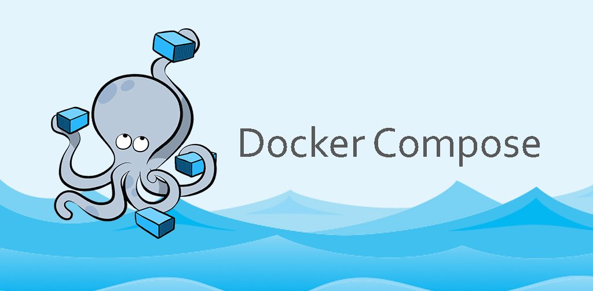
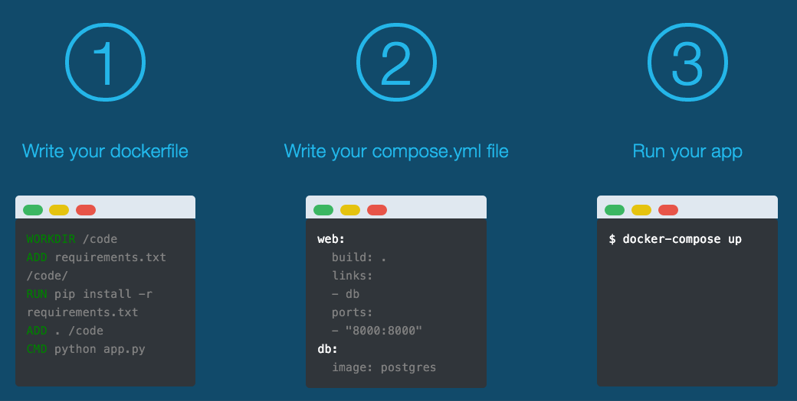
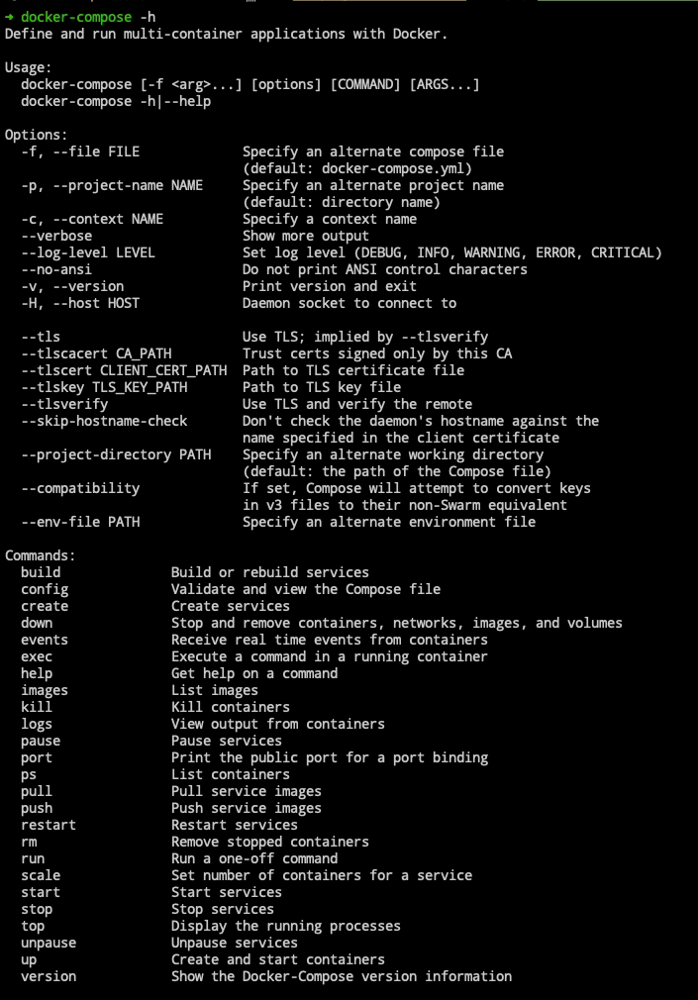
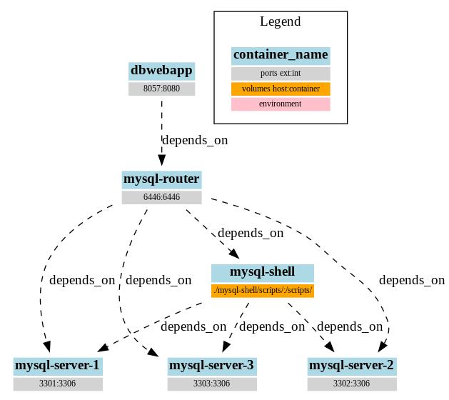

Docker Compose是官方编排项目之一，负责快速的部署分布式应用，定义和运行多个容器的应用。从功能上看，跟OpenStack中的Heat十分类似。如果不使用的话，我们部署或者搭建一个环境可能需要启动5~9容器才能够满足我们的需要，而且更新和维护都不是很方便。
- 参考来自《Docker 从入门到实践》文章，侵权必删

1. 简介说明
分布式系统中常常会使用到，可以极大地方便部署和环境搭建。
我们知道使用一个 Dockerfile 模板文件，可以让用户很方便的定义一个单独的应用容器。然而，在日常工作中，经常会碰到需要多个容器相互配合来完成某项任务的情况。例如要实现一个 Web 项目，除了 Web 服务容器本身，往往还需要再加上后端的数据库服务容器，甚至还包括负载均衡容器等，Compose 恰好满足了这样的需求。
Compose 中有两个重要的概念：
- 服务 (
service)- 一个应用的容器，实际上可以包括若干运行相同镜像的容器实例
- 项目 (
project)- 由一组关联的应用容器组成的一个完整业务单元
- 在
docker-compose.yml文件中定义，由多个服务构建而成 - 一个项目可以由多个服务关联而成，
Compose面向项目进行管理
默认管理对象是项目，通过子命令对项目中的一组容器进行便捷地生命周期管理。该项目由 Python编写，实现上调用了 Docker 服务提供的 API 来对容器进行管理。因此，只要所操作的平台支持 Docker API，就可以在其上利用 Compose 来进行编排管理。

2. 安装卸载
Compose支持Linux/macOS/Windows三大操作系统平台。
- [1] 二进制安装
# 从官方GitHub仓库直接下载编译好的二进制文件
$ sudo curl -L https://github.com/docker/compose/releases/download/1.17.1/docker-compose-`uname -s`-`uname -m` > /usr/local/bin/docker-compose
$ sudo chmod +x /usr/local/bin/docker-compose- [2] PIP 包安装
# 从pip源中安装
$ sudo pip install -U docker-compose- [3] 自动补全命令
# linux
$ curl -L https://raw.githubusercontent.com/docker/compose/1.8.0/contrib/completion/bash/docker-compose > /etc/bash_completion.d/docker-compose
# mac
$ brew install bash-completion
$ curl -L https://raw.githubusercontent.com/docker/docker/v$(docker version -f "{{.Client.Version}}")/contrib/completion/bash/docker -o /usr/local/etc/bash_completion.d/docker- [3] 卸载方式
# 二进制包方式安装
$ sudo rm /usr/local/bin/docker-compose
# 通过pip安装的
$ sudo pip uninstall docker-compose- [4] 注意事项
# 如果启动时报如下错误，则说明curl安装方式下载的包不完整
[60791] Cannot open self /usr/local/bin/docker-compose or archive /usr/local/bin/docker-compose.pkg3. 命令使用
使用当中最核心的知识点集中在，基础命令的使用和排版文件的编写。
- 需要详细了解命令使用，请参考《官方命令使用》

- [1] 命令格式
# 命令对象与格式
# 大部分命令的对象既可以是项目也可以是服务或者容器，默认为项目
docker-compose [-f=<arg>...] [options] [COMMAND] [ARGS...]| 编号 | 命令选项 | 选项说明 |
|---|---|---|
| 1 | -f/--file FILE |
指定使用的模板文件，默认为docker-compose.yml文件 |
| 2 | -p/--project-name NAME |
指定项目名称，默认将使用所在子目录名称作为项目名 |
| 3 | --project-directory PATH |
指定另一个工作目录，默认为docker-compose.yml所在的路径 |
| 4 | --env-file PATH |
指定一个环境变量配置文件 |
| 5 | --verbose |
输出更多调试信息 |
# 指定配置文件
$ docker-compose -f ./docker-compose.yml up -d
# 设置项目名称(有冲突时非常重要)
$ docker-compose -p app1 up -d- [2] 常用命令
| 编号 | 命令使用 | 使用说明 | 命令选项 |
|---|---|---|---|
| 1 | build |
构建或重构项目中的容器服务 | --force-rm/--no-cache |
| 2 | config |
验证模板文件格式是否正确，正确或错误都有回显 | --services |
| 3 | up |
将自动完成构建镜像、服务创建启动并关联服务相操作 | -d/--no-deps |
| 4 | down |
将会停止up命令所启动的容器，并移除对应网络 |
--volumes |
| 5 | run |
在指定服务上执行一个命令 | -d/--name NAME |
| 6 | exec |
进入指定的容器里面，可以直接运行对应命令 | --env KEY=VAL |
| 7 | start |
启动已经存在的服务容器 | - |
| 8 | stop |
停止已经处于运行状态的容器但不删除它 | - |
| 9 | restart |
重启项目中的服务 | -t TIMEOUT |
| 10 | pause |
暂停一个服务容器 | - |
| 11 | unpause |
恢复处于暂停状态中的服务 | - |
# 启动服务
docker-compose -f ./docker-compose.yml up -d
docker-compose -f ./docker-compose.yml up -d eureka
# 执行命令
$ docker-compose run ubuntu ping docker.com
$ docker-compose run --no-deps web python manage.py shell
# 起停服务
$ docker-compose start eureka
$ docker-compose stop eureka
$ docker-compose rm eureka
# 删除进程
$ docker-compose kill eureka
$ docker-compose kill -s SIGINT- [3] 高级用法
| 编号 | 命令使用 | 使用说明 | 命令选项 |
|---|---|---|---|
| 1 | top |
查看各个服务容器内运行的进程 | - |
| 2 | ps |
现在现在运行的容器状态，包括名称、端口等信息 | -a/--filter KEY=VAL |
| 3 | port |
打印端口绑定的公共端口 | --protocol=proto |
| 4 | logs |
显示通过该命令运行的所有容器日志(不知道容器的话) | -f/-t/--tail="all" |
| 5 | rm |
删除所有停止状态的服务容器 | -f/-v |
| 6 | kill |
发送SIGKILL信号来停止容器，支持-s参数指定信号 |
-s SIGNAL |
| 7 | images |
列出镜像列表 | -q |
| 8 | pull |
下载容器镜像 | -q/--parallel |
| 9 | push |
推送容器镜像 | --ignore-push-failures |
| 10 | scale |
设置指定服务运行的容器个数 | -t |
| 11 | events |
从容器接收 docker 的日志监控日志 | --json |
# 查看日志
$ docker-compose logs -f -t
# 查看端口
$ docker-compose port eureka 8761
# 查看进程
$ docker-compose ps
$ docker-compose ps eureka
$ docker-compose top
$ docker-compoes top eureka
# 启动副本
# 注意这里不能在配置文件中使用container_name参数来固定名称
$ docker-compose scale web=3 db=2
# 以json的形式输出nginx的docker日志
$ docker-compose events --json nginx4. 模板编写
根据工作的实际需要来选择，排版模板的版本。
- [1] 常用命令
| 编号 | 命令使用 | 使用说明 | 命令选项 |
|---|---|---|---|
| 1 | build |
自动构建镜像并使用 | context/dockerfile |
| 2 | image |
指定为镜像名称或镜像 | |
| 3 | command |
覆盖容器启动后默认执行的命令 | - |
| 4 | container_name |
指定容器名称，使用之后无法进行扩展 | - |
| 5 | volumes |
数据卷所挂载路径设置，可以设置宿主机路径或加上访问模式 | - |
| 6 | restart |
指定容器退出后的重启策略为始终重启 | - |
| 7 | depends_on |
解决容器的依赖、启动先后的问题 | - |
| 8 | environment |
设置环境变量，可以使用数组或字典两种格式，最好放到引号里 | - |
| 9 | env_file |
从文件中获取环境变量，可以为单独的文件路径或列表 | - |
| 10 | expose |
暴露端口，但不映射到宿主机，只被连接的服务访问 | - |
| 11 | ports |
暴露端口信息 | - |
| 12 | extra_hosts |
类似--add-host参数，指定额外的host名称映射信息 |
- |
| 13 | networks |
配置容器连接的网络 | driver/ipam |
| 14 | network_mode |
设置网络模式，使用方式和docker run的 --network参数一样的值 |
- |
| 15 | sysctls |
配置容器内核参数 | - |
| 16 | privileged |
允许容器中运行一些特权命令 | - |
| 17 | runtime |
指定容器运行时的方式，通常用户指定GPU使用 |
版本2.3特有 |
- [2] 高级用法
| 编号 | 命令使用 | 使用说明 | 命令选项 |
|---|---|---|---|
| 1 | user |
指定容器中运行应用的用户名 | - |
| 2 | working_dir |
指定容器中工作目录 | - |
| 3 | entrypoint |
指定服务容器启动后执行的入口文件 | - |
| 4 | logging |
配置日志选项 | driver/options |
| 5 | devices |
指定设备映射关系 | - |
| 6 | healthcheck |
通过命令检查容器是否健康运行 | test |
| 7 | dns |
自定义DNS服务器，可以是一个值也可以是一个列表 |
- |
| 8 | dns_search |
配置DNS搜索域，可以是一个值也可以是一个列表 |
- |
| 9 | tmpfs |
挂载一个tmpfs文件系统到容器 |
- |
| 10 | labels |
为容器添加额外信息，例如为容器添加辅助说明信息 | - |
| 11 | pid |
跟主机系统共享进程命名空间 | - |
| 12 | secrets |
存储敏感数据，例如mysql服务密码 |
- |
| 13 | stop_signal |
设置另一个信号来停止容器，在默认情况下使用的是SIGTERM停止容器 |
- |
| 14 | ulimits |
指定容器的ulimits限制值 |
nproc/nofile |
| 15 | configs |
仅用于Swarm配置时使用 |
版本3特有 |
| 16 | deploy |
仅用于Swarm部署时使用 |
版本3.3特有 |
5. 实战演示
实际使用才能够真正用法和使用技巧，哈哈哈。

- [1] 搭建 Django 开发环境
version: "3"
services:
db:
image: postgres
web:
build: .
command: python3 manage.py runserver 0.0.0.0:8000
volumes:
- .:/code
ports:
- "8000:8000"
links:
- db- [2] 搭建 WordPress 应用程序
version: "3"
services:
db:
image: mysql:5.7
volumes:
- db_data:/var/lib/mysql
restart: always
environment:
MYSQL_ROOT_PASSWORD: somewordpress
MYSQL_DATABASE: wordpress
MYSQL_USER: wordpress
MYSQL_PASSWORD: wordpress
wordpress:
depends_on:
- db
image: wordpress:latest
ports:
- "8000:80"
restart: always
environment:
WORDPRESS_DB_HOST: db:3306
WORDPRESS_DB_USER: wordpress
WORDPRESS_DB_PASSWORD: wordpress
volumes:
db_data:- [3] 控制容器启动顺序
version: "2"
services:
mysql:
image: mysql:5.7
expose:
- "3306"
environment:
- MYSQL_ROOT_PASSWORD=123456
wordpress:
image: wordpress
ports:
- "80:80"
volumes:
- ./wait-for-it.sh:/wait-for-it.sh
environment:
- WORDPRESS_DB_HOST=mysql
- WORDPRESS_DB_USER=root
- WORDPRESS_DB_PASSWORD=123456
entrypoint: "sh /wait-for-it.sh mysql:3306 -- docker-entrypoint.sh"
command: ["apache2-foreground"]- [4] 搭建运行 ELK 环境
version: "2"
services:
elasticsearch:
image: elasticsearch
ports:
- "9200:9200" # REST API端口
- "9300:9300" # RPC端口
networks:
elk_network:
ipv4_address: 172.30.0.10
logstash:
image: logstash
command: logstash -f /etc/logstash/conf.d/logstash.conf
volumes:
- ./config:/etc/logstash/conf.d
- /opt/build:/opt/build
ports:
- "5000:5000"
networks:
elk_network:
ipv4_address: 172.30.0.11
kibana:
image: kibana
environment:
- ELASTICSEARCH_URL=http://elasticsearch:9200
ports:
- "5601:5601"
networks:
elk_network:
ipv4_address: 172.30.0.12
networks:
elk_network:
driver: bridge
ipam:
driver: default
config:
- subnet: 172.30.0.0/16
gateway: 172.30.0.1# 配置logstash.conf文件的参考示例
input {
file {
codec => json
path => "/opt/build/*.json"
}
}
filter {
grok {
match => { "message" => "%{TIMESTAMP_ISO8601:timestamp}\s+%{LOGLEVEL:severity}\s+\[%{DATA:service},%{DATA:trace},%{DATA:span},%{DATA:exportable}\]\s+%{DATA:pid}---\s+\[%{DATA:thread}\]\s+%{DATA:class}\s+:\s+%{GREEDYDATA:rest}" }
}
}
output {
elasticsearch {
hosts => "elasticsearch:9200"
}
}- [5] 来一个高级的实例
$ docker swarm init
docker stack deploy --compose-file docker-stack.yml vote
docker stack services voteversion: "3"
services:
redis:
image: redis:alpine
ports:
- "6379"
networks:
- frontend
deploy:
replicas: 2
update_config:
parallelism: 2
delay: 10s
restart_policy:
condition: on-failure
db:
image: postgres:9.4
volumes:
- db-data:/var/lib/postgresql/data
networks:
- backend
deploy:
placement:
constraints: [node.role == manager]
vote:
image: dockersamples/examplevotingapp_vote:before
ports:
- 5000:80
networks:
- frontend
depends_on:
- redis
deploy:
replicas: 2
update_config:
parallelism: 2
restart_policy:
condition: on-failure
result:
image: dockersamples/examplevotingapp_result:before
ports:
- 5001:80
networks:
- backend
depends_on:
- db
deploy:
replicas: 1
update_config:
parallelism: 2
delay: 10s
restart_policy:
condition: on-failure
worker:
image: dockersamples/examplevotingapp_worker
networks:
- frontend
- backend
deploy:
mode: replicated
replicas: 1
labels: [APP=VOTING]
restart_policy:
condition: on-failure
delay: 10s
max_attempts: 3
window: 120s
placement:
constraints: [node.role == manager]
visualizer:
image: dockersamples/visualizer
ports:
- "8080:8080"
stop_grace_period: 1m30s
volumes:
- /var/run/docker.sock:/var/run/docker.sock
deploy:
placement:
constraints: [node.role == manager]
networks:
frontend:
backend:
volumes:
db-data:6. 注意事项
运行容器的使用是有一定的实用技巧的，比如后台启动、不依赖启动等：
# 编译运行
$ docker-compose build web
$ docker-compose up --no-deps -d web